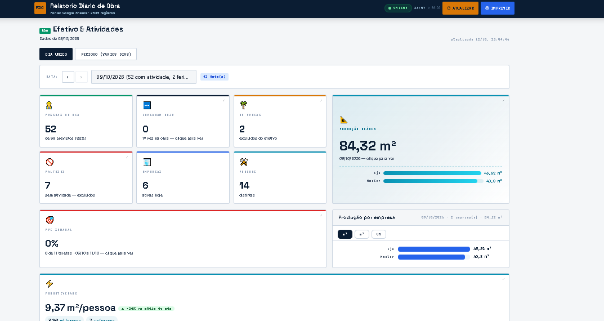

01 / Controle operacional
Relatório Diário de Obra
Desenvolvi um painel para consultar efetivo, atividades e produção por dia. Ele reúne as informações da operação em uma tela objetiva e facilita a consulta e a impressão de relatórios.
Projeto apresentado por imagens; sem acesso público ao sistema.